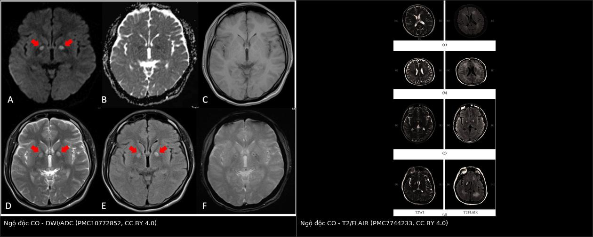
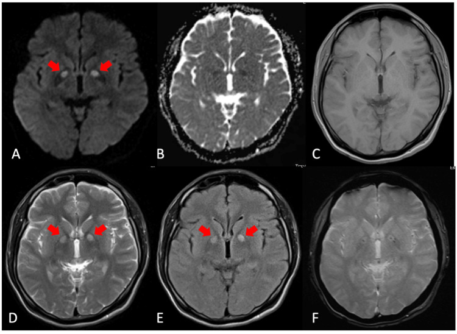
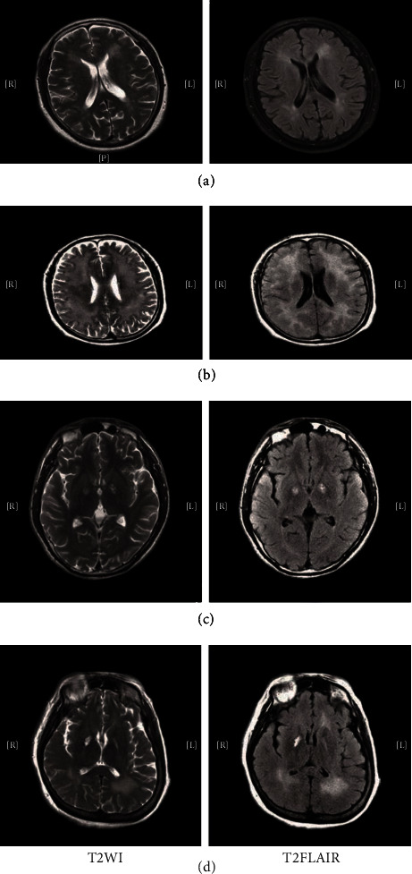

1738 — Ngộ độc carbon monoxid (CO) do khói lửa và khí đốt ở trẻ: COHb KHÔNG đo được độ nặng, khi nào chụp MRI não, khi nào cần HBO
Tags: pattern:hoai-tu-thieu-ox pattern:ton-thuong-doi-xung-nhan-beo pattern:han-che-khuech-tan pattern:hinh-anh-binh-thuong vung:nao vung:phoi vung:toan-than score:COHb score:GCS score:lactate protocol:MRI-DWI-ADC protocol:oxy-100 protocol:HBO
Mức chắc chắn (certainty): tổng hợp y văn (literature synthesis) — ghép thuần tập 113 trẻ theo dõi 3,6 ± 1,5 năm (Sci Rep 2024, PMC11612167), nghiên cứu tiến cứu 154 bệnh nhân DWI–DNS (Diagnostics 2020, PMC7555258), hướng dẫn S2k 2021 (GMS Ger Med Sci, PMC8607608 — CC BY 4.0), nghiên cứu tiến cứu đa trung tâm 255 ca (PLoS One 2021, PMC8213185) và 2 loạt ca có hình MRI (Cureus 2023, PMC10772852; Behav Neurol 2020, PMC7744233). Không có ca do nhóm tự chụp; mọi ảnh đều là ca người lớn, dùng để dạy mẫu hình ảnh, không dùng để suy ra tỉ lệ ở trẻ.
Câu hỏi thực hành: bé trai 5 tuổi được bố bế vào cấp cứu lúc 7 giờ sáng, sau đêm ngủ trong phòng tắm kín có bình nóng lạnh gas. Trẻ lơ mơ, nôn 2 lần, mẹ và em 3 tháng cũng đau đầu. Khí máu: lactat 6,8 mmol/L, pH 7,28, PaO₂ 96 mmHg, SpO₂ 99%. COHb đo tại cửa: 6,1% (đã thở oxy trên xe cứu thương 25 phút). CT sọ không cản quang: bình thường. Bố hỏi: "COHb chỉ 6% mà sao cháu vẫn lơ mơ? Có cần chụp MRI không, và có phải vào buồng tăng áp không?" Bài chốt sáu điểm: (1) COHb là số đo THỜI ĐIỂM, không phải thước đo độc tính — nửa đời COHb trên khí trời 4–5 giờ, trên oxy ~1 giờ, ở 2,5 ATA chỉ 20 phút; đo sau khi đã thở oxy thì con số luôn thấp hơn thực tế; (2) COHb bình thường ở trẻ sơ sinh đã có ca 22% mà không triệu chứng, trong khi 3% đã có triệu chứng — nên quyết định theo lâm sàng + lactat + bối cảnh, không theo ngưỡng COHb đơn thuần; (3) SpO₂ 99% là bẫy — pulse oximeter đọc COHb như oxyhemoglobin (COHb 70% vẫn hiện SpO₂ 92%); (4) CT sọ thường BÌNH THƯỜNG trong giờ đầu — MRI DWI/ADC mới thấy hạn chế khuếch tán, và nên chụp trong 72 giờ nếu trẻ hôn mê > 1 giờ; (5) tổn thương điển hình là HAI BÊN ĐỐI XỨNG ở nhân bèo (globus pallidus) ± chất trắng quanh não thất, không phải ổ đơn độc; (6) HBO chỉ khi có chỉ định đặc biệt — bằng chứng ở trẻ yếu, phải khởi động < 6 giờ và không có giá trị sau 24 giờ, trong khi trẻ không ổn định thì chỉ oxy 100%.

Trái: MRI DWI/ADC/T1/T2/FLAIR/GRE của người đàn ông 34 tuổi trong một vụ ngộ độc hộ gia đình (vợ và 3 con cùng phơi nhiễm) — DWI tăng, ADC giảm ở nhân bèo hai bên (mũi tên đỏ), T1 giảm, T2/FLAIR tăng, GRE có điểm giảm tín hiệu nhỏ. Phải: T2WI/FLAIR của một loạt bệnh não muộn sau ngộ độc CO (DEACMP) — tăng tín hiệu chất trắng hai bên và nhân bèo. Ảnh ghép letterbox giữ nguyên tỉ lệ (Cureus 2023, PMC10772852, CC BY 4.0; Behav Neurol 2020, PMC7744233, CC BY 4.0).1. Tổng quan bệnh học – cơ chế hình ảnh: vì sao "ngộ độc nặng" mà phim chụp trắng trơn, và vì sao COHb không phải thước đo
- Nguồn phơi nhiễm ở trẻ — bối cảnh quan trọng hơn hình ảnh: CO sinh ra từ đốt cháy không hoàn toàn (gas, than, củi, xăng dầu). Trong 113 trẻ nhập viện vì ngộ độc CO, 89,4% (101/113) do bình nóng lạnh gas đặt trong phòng tắm kín, 9,7% (11/113) do sưởi bằng lửa, 1 ca do bố để trẻ trong xe đang nổ máy (Sci Rep 2024, PMC11612167). Đây là lý do phải hỏi bối cảnh (phòng kín, nhiều người cùng triệu chứng, mùa lạnh) trước khi hỏi "chụp gì".
- Dịch tễ để không bỏ sót: gánh nặng toàn cầu 137 ca/million dân, 4,6 tử vong/million; tỉ lệ mắc có hai đỉnh: trẻ 0–14 tuổi và người 20–39 tuổi (Diagnostics 2025, PMC11899572). Ở Mỹ khoảng 50.000 ca cấp cứu/năm, tử vong 1–3% (cùng bài).
- Cơ chế phân tử — ba tầng, mỗi tầng để lại một dấu hiệu đo được:
- CO gắn hemoglobin mạnh gấp 200–250 lần oxy → tạo carboxyhemoglobin (COHb), vừa giảm khả năng chuyên chở oxy vừa đẩy đường cong phân ly sang trái (oxy khó nhả cho mô). CO gắn myoglobin mạnh gấp 60 lần oxy → tổn thương cơ tim.
- Ức chế cytochrome c oxidase (phức hợp IV) → chặn hô hấp ty thể, giảm ATP, tăng chuyển hóa yếm khí → toan lactic. Vì vậy lactat là dấu hiệu sinh hóa của độc tính mô, không phải COHb (xem dưới).
- Viêm – oxy hóa – chết tế bào: CO làm peroxy hóa lipid, tăng ROS, hoạt hóa tiểu cầu và bạch cầu, tổn thương nội mô, huyết khối vi mạch — đây là cơ sở của tổn thương chất trắng và nhân bèo muộn, kể cả khi COHb đã về bình thường (Diagnostics 2025, PMC11899572).
- TẠI SAO COHb KHÔNG tương quan với độ nặng — bốn lý do định lượng:
- Động học thải: nửa đời COHb 4–5 giờ khi thở khí trời, ~1 giờ khi thở oxy, và 20 phút ở 2,5 ATA (J Clin Med 2024, PMC11084260). Mỗi phút chờ đợi làm con số tụt, trong khi tổn thương mô đã xảy ra.
- Đo muộn/đã thở oxy: bệnh nhân được oxy tại hiện trường — như ca mở bài — có COHb 6,1% dù lâm sàng nặng. Hướng dẫn S2k nói rõ: "COHb âm tính không loại trừ ngộ độc CO nếu bệnh sử và triệu chứng phù hợp", và theo dõi COHb đơn thuần không dùng để quản lý điều trị (GMS Ger Med Sci 2021, PMC8607608).
- Biến thiên sinh học: một trẻ sơ sinh không triệu chứng ở COHb 22%, trong khi một trẻ khác có triệu chứng ở 3% (S2k 2021, PMC8607608) — cùng một ngưỡng, hai kết cục.
- Không tương quan thống kê: trong 72 ca, COHb trung vị nhóm có di chứng thần kinh muộn (DNS) là 30% (10–43) so với 25% (10–44) nhóm không DNS, p = 0,7; COHb không dự báo việc phải dùng HBO (p = 0,9), còn khám thần kinh bất thường mới là yếu tố dự báo (OR 18,6; p = 0,004) (Am J Emerg Med 2020, PMID 31889577). Trong 113 trẻ, phân tích đa biến chỉ giữ lại bất thường hình ảnh sọ và rối loạn ý thức > 1 ngày (Sci Rep 2024, PMC11612167).
- TẠI SAO não là cơ quan bị đánh dấu — và vì sao hai bên đối xứng:
- Nhân bèo (globus pallidus) là vùng nhu cầu chuyển hóa cao, giàu myelin, nằm ở vùng tưới máu tận–phân thủy, nên nhạy với thiếu oxy–thiếu máu cục bộ toàn thể; CO còn gây nhiễm độc trực tiếp oligodendrocyte và tế bào thần kinh → vị trí tổn thương đối xứng là quy luật, không phải ngẫu nhiên. Bất thường MRI ở nhân bèo gặp ở 19,9% bệnh nhân ngộ độc CO nói chung; ngoài ra vỏ não, hồi hải mã, chất trắng quanh não thất; thân não và đồi thị hiếm (Sci Rep 2024, PMC11612167, dẫn y văn).
- Chuỗi thời gian trên MRI — giải thích bằng vật lý tín hiệu:
- Giờ đầu – 72 giờ: phù độc tế bào → nước chuyển từ ngoài vào trong tế bào, chuyển động Brown bị giới hạn → DWI tăng, ADC giảm. Đây là dấu hiệu sớm nhất và nhạy hơn CT.
- Vài ngày – vài tuần: hoại tử – hủy myelin → nước tự do tăng → T2/FLAIR tăng, T1 giảm; ADC có thể giả hóa (pseudonormalization) rồi tăng khi mô mềm hóa.
- GRE/SWI: điểm giảm tín hiệu nhỏ = vi xuất huyết (ca trong ảnh có).
- CT: chỉ thấy giảm đậm độ khi đã đủ phù; vì vậy CT bình thường trong giờ đầu là quy luật. Trong một loạt 20 ca DEACMP, CT bất thường tới 87,5%, nhưng đó là bệnh não muộn, không phải cấp (Behav Neurol 2020, PMC7744233).
- Bệnh não muộn (DEACMP/DNS): sau khoảng tỉnh (lucid interval) 2–40 ngày, bệnh nhân sa sút trí tuệ, Parkinson, múa giật, rối loạn tâm thần, đái không kiểm soát; định nghĩa DNS trong y văn trải 2–240 ngày sau ra viện (Am J Emerg Med 2020, PMID 31889577). Cơ chế không chỉ thiếu oxy: hủy myelin do miễn dịch, chết tế bào oligodendrocyte, tổn thương vi mạch (Neural Regen Res 2020, PMC7749483 — tổng quan cơ chế).
- Tim — cơ quan thứ hai, dễ bỏ sót ở trẻ: CO gắn myoglobin, gây thiếu máu cơ tim, loạn nhịp, tụt huyết áp; men tim có thể tăng rất cao (ca trong loạt 5 ca: troponin T 1314 ng/L) (Cureus 2024, PMC10884778). Vì vậy ECG + troponin là một phần của "bộ xét nghiệm CO", không phải xét nghiệm tùy chọn.
- Vì sao trẻ KHÁC người lớn — bốn điểm thực hành:
- HbF gắn CO mạnh hơn HbA và thải chậm hơn → thai và trẻ sơ sinh có thể nặng hơn mẹ dù mẹ nhẹ; có ca COHb thai 61% trong khi mẹ 7% sau 1 giờ thở oxy (S2k 2021, PMC8607608).
- Trẻ có triệu chứng SỚM hơn nhưng hồi phục nhanh hơn, và nửa đời COHb ở trẻ ngắn hơn người lớn (S2k 2021) — nghĩa là COHb ở trẻ càng kém tin cậy để phân tầng.
- Trẻ nhỏ không mô tả được: biểu hiện có thể chỉ là quấy khóc, nôn, bú kém, co giật; trong 113 trẻ, 59,3% vào viện vì rối loạn ý thức, 32,7% vì chóng mặt/đau đầu (Sci Rep 2024).
- Dự trữ sinh lý mỏng: dung tích cặn chức năng nhỏ, tần số thở cao → lượng khí độc vào tính theo kg lớn hơn; dễ hạ đường huyết, hạ thân nhiệt đồng thời.
2. Mẫu hình + chẩn đoán phân biệt theo vị trí (Gamut)
- Bốn mẫu hình (pattern) — theo thứ tự thường gặp ở trẻ:
- Hôn mê/co giật + toan lactic + CT sọ bình thường — mẫu hình cấp cứu, chẩn đoán bằng bối cảnh + lactat, không bằng ảnh. Đây là mẫu hình của ca mở bài.
- Hai bên đối xứng nhân bèo trên MRI (DWI tăng/ADC giảm sớm; T2/FLAIR tăng muộn) ± vi xuất huyết trên GRE — mẫu hình đặc hiệu nhất, gặp ở 19,9% bệnh nhân ngộ độc CO nói chung.
- Chất trắng lan tỏa hai bên (quanh não thất, bán bầu dục, thể chai) — mẫu hình của DEACMP; trong 154 bệnh nhân chụp DWI, 31,8% có tổn thương não cấp, và tổn thương chất trắng là yếu tố liên quan DNS mạnh nhất (OR 6,741; 95% CI 1,843–24,660) (Diagnostics 2020, PMC7555258).
- Hình ảnh hoàn toàn bình thường — không loại trừ; trong 113 trẻ, nhóm không di chứng vẫn có 4% (4/100) bất thường hình ảnh, còn nhóm di chứng 61,5% (8/13) (Sci Rep 2024).
- Gamut theo vị trí "hai bên đối xứng nhân bèo" — 6 nguyên nhân phải nghĩ:
- Ngộ độc CO — bối cảnh cháy/khí gas, tổn thương GP ± chất trắng, hồi phục qua giai đoạn tỉnh rồi tái phát (DEACMP).
- Ngộ độc cyanid/H₂S — ức chế cytochrome giống CO; lactat rất cao, PaO₂ bình thường, bối cảnh cháy kín/cống (xem bài 1720).
- Ngộ độc methanol — hay gặp putamen hơn là GP, kèm toan chuyển hóa khoảng trống anion, bệnh sử rượu.
- Thiếu oxy–thiếu máu cục bộ toàn thể (ngưng tim, đuối nước, ngạt) — tổn thương GP + vỏ não + hải mã, bối cảnh rõ.
- Bệnh não do opioid (CHANTER syndrome) — tiền sử opioid, tổn thương hai bên GP + hải mã + tiểu não.
- Bệnh chuyển hóa/di truyền ở trẻ — Leigh, Wilson, glutaric aciduria type 1, hạ đường huyết kéo dài — đối xứng nhưng bối cảnh không có phơi nhiễm, có thể tăng lactate mạn.
- Gamut "hôn mê + toan lactic + CT bình thường" ở trẻ (thứ tự nghĩ): CO → cyanid/H₂S (nếu cháy kín) → methemoglobin (SpO₂ "kẹt", MetHb > 1,5%) → hạ đường huyết → co giật kéo dài → sốc nhiễm khuẩn → rối loạn chuyển hóa bẩm sinh.
- Cờ đỏ (red flag) ở trẻ — có một trong các dấu hiệu này là nhập viện, không theo dõi ngoại trú: hôn mê từ lúc nào > 1 giờ, co giật, GCS giảm, dấu thần kinh khu trú, lactat > 5 mmol/L, toan pH < 7,30, đau ngực/ECG bất thường/troponin tăng, thai nhi đang bị ảnh hưởng (mẹ mang thai), và nhiều người trong cùng hộ có triệu chứng.
3. Bảng so sánh phân biệt (ma trận đối chiếu)
| Thực thể (entity) | Hình ảnh / xét nghiệm điển hình | Chốt vào (rule-in) | Chốt loại (rule-out) | Gợi ý xác nhận |
|---|---|---|---|---|
| Ngộ độc CO cấp | CT sọ thường bình thường; MRI DWI nhân bèo hai bên tăng, ADC giảm sớm; T2/FLAIR tăng muộn; COHb đo sớm (nửa đời 4–5 giờ khí trời) | Bối cảnh phơi nhiễm + nhiều người cùng triệu chứng + lactat tăng + đáp ứng oxy 100%; GP hai bên trên MRI | COHb bình thường/6% KHÔNG loại trừ nếu đã thở oxy; CT bình thường không loại trừ | Co-oximetry máu (không phải SpO₂), lactat, MRI DWI/ADC |
| Ngộ độc cyanid (khói lửa) | CT ngực/sọ thường bình thường; lactat rất cao, PaO₂ bình thường, gradient A–V hẹp | Cháy kín + hôn mê/ngưng tim + lactat > 10 + PaO₂ bình thường, hồi phục sau hydroxocobalamin | COHb cao không loại trừ cyanid (hai khí cùng tồn tại) | Đáp ứng hydroxocobalamin; co-oximetry không đo cyanid |
| Methemoglobin | Xanh tím, SpO₂ kẹt ~85% dù PaO₂ cao; MetHb > 1,5% | MetHb cao + máu sô-cô-la + không đáp ứng oxy | SpO₂ bình thường trên khí máu → nghĩ CO/cyanid hơn | Co-oximetry đa bước sóng |
| H₂S (cống, hầm biogas) | Hình ảnh thường bình thường; toan lactic; bối cảnh không cháy, mùi trứng thối | Bối cảnh hầm/cống + hôn mê nhanh + lactat cao | Không có phơi nhiễm → loại | Bệnh sử; không có xét nghiệm nhanh |
| Ngưng tim/ngạt (thiếu oxy toàn thể) | GP + vỏ não + hải mã; phù lan tỏa; ADC giảm lan rộng hơn CO | Tiền sử ngưng tim/đuối nước/treo cổ | Có phơi nhiễm CO rõ thì không loại trừ CO | Bệnh sử, ECG, troponin, MRI |
| DEACMP (bệnh não muộn) | T2/FLAIR tăng chất trắng hai bên ± GP; T1 giảm; CT có thể 87,5% bất thường | Khoảng tỉnh 2–40 ngày rồi sa sút trí tuệ/Parkinson/rối loạn tâm thần | MRI bình thường lúc cấp không loại trừ DEACMP về sau | MRI lặp ở tuần 2–6; đánh giá nhận thức |
| Hạ đường huyết / bệnh chuyển hóa | Tổn thương đối xứng GP/vỏ, nhưng không có phơi nhiễm; lactate mạn tính | Glucose thấp, bối cảnh nhịn ăn/bệnh lý, hồi phục sau glucose | Có phơi nhiễm gas + nhiều người bệnh → ít nghĩ | Glucose mao mạch, amoniac, acid hữu cơ |
- Ảnh ghép đối chiếu:
images/composite_mri-co-nao.jpg— DWI/ADC (giờ đầu) đặt cạnh T2/FLAIR (bệnh não muộn), cùng tổn thương nhân bèo/chất trắng hai bên nhưng hai thời điểm sinh lý khác nhau.
4. Protocol chụp – xét nghiệm + hệ phân tầng điều trị
- Nguyên tắc: oxy trước, ảnh sau, và không chờ COHb. Thứ tự tại cửa cấp cứu:
- Đường thở – thở – tuần hoàn; oxy 100% qua mask có túi dự trữ/ HFNC; đặt nội khí quản nếu hôn mê, co giật, bỏng đường thở; thở máy FiO₂ 1,0 ở trẻ đã đặt ống cho tới khi hết triệu chứng và COHb < 3% (S2k 2021, PMC8607608).
- Lấy máu cùng lúc: co-oximetry (COHb, MetHb), khí máu động mạch + tĩnh mạch, lactat, glucose, điện giải, creatinin, men gan, CK, troponin, ECG 12 chuyển đạo. Nhớ: SpO₂ bình thường không phải bằng chứng — pulse oximeter hai bước sóng đọc COHb như oxyhemoglobin (COHb 70% vẫn hiện SpO₂ 92%) (J Clin Med 2024, PMC11084260).
- Chẩn đoán hình ảnh — chỉ định theo lâm sàng, không thường quy:
- CT sọ không cản quang khi: hôn mê, co giật, GCS giảm, chấn thương đầu, dấu thần kinh khu trú — để loại trừ chảy máu/chấn thương, không để "tìm CO".
- MRI sọ có DWI/ADC khi: rối loạn ý thức > 1 giờ, co giật, hoặc bất thường thần kinh kéo dài; thời điểm tốt nhất là trong 72 giờ sau phơi nhiễm (Sci Rep 2024, PMC11612167). Chuỗi tối thiểu: DWI + ADC + T2/FLAIR + T1 ± GRE/SWI (GRE để tìm vi xuất huyết).
- MRI lặp ở tuần 2–6 nếu nghi DEACMP (khoảng tỉnh rồi sa sút) — không cần chụp lại sớm nếu lâm sàng ổn.
- X-quang ngực khi có hít khói/bỏng đường thở (tìm xẹp phổi, phù phổi, tràn khí); CT ngực chỉ khi nghi biến chứng phổi hoặc chấn thương.
- Phân tầng nhập viện (S2k 2021):
- Có triệu chứng → luôn nhập viện.
- Không triệu chứng: COHb ≤ 5% (người hút thuốc ≤ 10%) → không cần nhập viện ở người lớn; nhưng trẻ em và thai phụ nên được mời nhập viện/theo dõi (khuyến cáo mạnh, đồng thuận 100%).
- Chỉ định HBO (bảng phân tầng — theo S2k 2021 và J Clin Med 2024, PMC11084260):
| Chỉ định HBO | Ngưỡng / ghi chú |
|---|---|
| Ngất, hôn mê, co giật | Chỉ định kinh điển, không phụ thuộc COHb |
| Rối loạn ý thức, dấu tiểu não, dấu thần kinh khu trú | Khám thần kinh bất thường dự báo DNS OR 18,6 |
| COHb > 25% | Ngưỡng được nhiều phác đồ dùng; nhưng không dùng một mình |
| Toan chuyển hóa nặng / thiếu máu cơ tim / loạn nhịp | Lactat cao, troponin tăng, ST thay đổi |
| Thai nhi bị ảnh hưởng | Thai distress, ngất của mẹ; COHb thai có thể cao hơn mẹ |
| Thời gian | Khởi động < 6 giờ; không khuyến cáo sau 24 giờ; 3 lần/24 giờ đầu; áp lực 2,5–3 bar |
| Biến chứng | Barotrauma 0,72%; cân nhắc vận chuyển và thời gian ra khỏi ICU ở trẻ |
- Điểm khác biệt ở TRẺ (quan trọng nhất của bài): hướng dẫn S2k nêu rõ bằng chứng HBO ở trẻ không đủ, không được suy ra trực tiếp từ người lớn, và HBO ở trẻ chỉ nên làm khi có chỉ định đặc biệt, vì phải vận chuyển, nằm ngoài ICU, nguy cơ barotrauma. Nghiên cứu hồi cứu lớn từ Đài Loan không thấy khác biệt tử vong giữa trẻ có/không HBO (dẫn trong S2k 2021). Trong thuần tập 113 trẻ, tiêu chuẩn dùng HBO là triệu chứng thần kinh/tim mạch, toan nặng, hoặc COHb ≥ 25%, và trẻ không ổn định chỉ được oxy 100% (Sci Rep 2024, PMC11612167). Nếu trẻ ổn định, không triệu chứng thần kinh: theo dõi nội trú + oxy là đủ; không chuyển tuyến chỉ vì COHb.
- Bằng chứng HBO còn mỏng — nói thật với gia đình: nghiên cứu tiến cứu đa trung tâm 255 ca, DNS 13/171 (7,6%) ở nhóm HBO so với 3/84 (3,6%) ở nhóm chỉ oxy (p = 0,212); số buổi HBO trong 24 giờ đầu liên quan DNS (OR 2,082; 1,101–3,937) — nhưng đây là confounding do bệnh nặng hơn được chỉ định nhiều buổi (PLoS One 2021, PMC8213185). Kết luận thực hành: HBO không phải "thuốc giải độc", và không được trì hoãn oxy 100% để chờ buồng tăng áp.
- Theo dõi sau ra viện — nơi bệnh não muộn được bắt:
- Hẹn khám thần kinh/nhận thức ở tuần 2–6 cho mọi trẻ hôn mê > 1 giờ hoặc có bất thường hình ảnh; hỏi trí nhớ, học tập, tính cách, dáng đi, đái không kiểm soát.
- Tỉ lệ thực tế: 11,5% (13/113) trẻ có bất thường nhận thức sau 3,6 năm; trong số đó 38,5% (5/13) có động kinh trong đợt cấp và 53,8% (7/13) tổn thương cơ quan khác (Sci Rep 2024).
- Tư vấn phòng bệnh: kiểm tra bình nóng lạnh gas, ống khói, lắp đầu báo CO, không dùng than/lò sưởi trong phòng kín, không để trẻ ngủ trong phòng tắm có bình gas.
flowchart TD
A[Trẻ nghi ngộ độc CO: bối cảnh kín, nhiều người triệu chứng] --> B[Oxy 100% ngay - không chờ xét nghiệm]
B --> C[Co-oximetry + khí máu + lactat + glucose + troponin + ECG]
C --> D{Hôn mê, co giật, GCS giảm, dấu thần kinh?}
D -->|Có| E[CT sọ không cản quang + nhập viện]
D -->|Không| F{COHb > 25% hoặc lactat cao hoặc thiếu máu cơ tim?}
E --> G{Rối loạn ý thức > 1 giờ?}
G -->|Có| H[MRI DWI/ADC trong 72 giờ]
G -->|Không| I[Theo dõi 6-12 giờ + khám thần kinh]
F -->|Có| J[Xét chỉ định HBO: khởi động < 6 giờ, không sau 24 giờ]
F -->|Không| I
J --> K{Trẻ ổn định và có chỉ định đặc biệt?}
K -->|Không| L[Oxy 100% + theo dõi nội trú]
K -->|Có| M[HBO 2,5-3 bar, 3 lần/24 giờ + theo dõi]
H --> N[Hẹn khám nhận thức tuần 2-6: nghi DEACMP]
I --> N
L --> N
M --> N
5. Biến thể bình thường và cạm bẫy
- Cạm bẫy 1 — "SpO₂ 99% thì không thiếu oxy". Pulse oximeter hai bước sóng không phân biệt COHb với oxyhemoglobin; COHb 70% vẫn cho SpO₂ ~92% (J Clin Med 2024). Ở trẻ, đây là lý do hay bị cho về nhà.
- Cạm bẫy 2 — "COHb 6% thì nhẹ". Đã thở oxy 25 phút thì 6% tương đương mức cao hơn nhiều lúc phơi nhiễm (nửa đời ~1 giờ trên oxy). Quyết định theo lâm sàng + lactat, không theo con số (S2k 2021).
- Cạm bẫy 3 — "CT bình thường thì não lành". CT chỉ đổi đậm độ khi đã đủ phù; MRI DWI trong 72 giờ mới thấy phù độc tế bào. Ca mở bài: CT bình thường, trẻ vẫn lơ mơ, lactat 6,8 — cần MRI, không phải yên tâm.
- Cạm bẫy 4 — bỏ sót "người thứ hai". Ngộ độc hộ gia đình: vợ và 3 con cùng phơi nhiễm trong ca có ảnh (Cureus 2023). Trẻ nhẹ triệu chứng vẫn có thể đang toan lactic; phải khám và đo lactat cho mọi người trong nhà.
- Cạm bẫy 5 — "chỉ là viêm dạ dày/ngộ độc thức ăn". Ở trẻ, nôn và đau bụng là biểu hiện thường gặp; mùa đông + phòng kín + nhiều người nôn là bối cảnh phải nghĩ CO.
- Cạm bẫy 6 — "đã tỉnh là xong". DEACMP xuất hiện sau khoảng tỉnh 2–40 ngày (định nghĩa DNS tới 240 ngày); không hẹn khám lại là bỏ sót. Trong loạt 20 ca DEACMP, 95% có suy giảm nhận thức lúc vào, còn 25% ở tháng thứ 6 — tức một phần hồi phục nhưng không phải tất cả (Behav Neurol 2020, PMC7744233).
- Cạm bẫy 7 — nhầm "hai bên đối xứng nhân bèo" là bệnh khác. Nếu không có bối cảnh phơi nhiễm, phải nghĩ Leigh/Wilson/CHANTER/ngưng tim; nếu có phơi nhiễm thì không cần sinh thiết — hình ảnh + bối cảnh là đủ.
- Cạm bẫy 8 — dùng hình ảnh để quyết định HBO. Không có bằng chứng rằng mức độ tổn thương trên MRI là tiêu chuẩn chọn HBO; chỉ định vẫn dựa lâm sàng + COHb + toan + tim. Ảnh dùng để tiên lượng và theo dõi, không phải "vé vào buồng tăng áp".
- Biến thể bình thường dễ nhầm: điểm giảm tín hiệu nhỏ trên GRE ở người lớn tuổi có thể là vi xuất huyết do tăng huyết áp; ở trẻ không có tiền sử thì nghĩ vi xuất huyết do CO. Giãn khoang quanh mạch (Virchow–Robin) không phải tổn thương chất trắng. COHb nền 5–10% ở người hút thuốc không phải ngộ độc.
6. Tự lượng giá — Blind Quiz
Ca 1 — Nam 34 tuổi, bất tỉnh trong nhà, vợ và 3 con cũng đau đầu. Nhìn 6 ô MRI, mô tả trước khi mở đáp án.

- Gợi ý lâm sàng: máy phát điện chạy trong nhà sau bão; cả gia đình 5 người cùng triệu chứng; bệnh nhân hôn mê, thở nhanh, lactat tăng.
- Câu hỏi: Tổn thương ở đâu, hai bên hay một bên? Chuỗi xung nào chốt tổn thương cấp? Vì sao T1 giảm mà T2 tăng? 3 chẩn đoán phân biệt của "nhân bèo hai bên"?
Bấm để hiện đáp án (findings + chẩn đoán)
- Dấu hiệu: (A) DWI tăng và (B) ADC giảm ở nhân bèo hai bên (mũi tên đỏ) → phù độc tế bào; (C) T1 giảm, (D) T2 và (E) FLAIR tăng cùng vùng; (F) GRE có điểm giảm tín hiệu nhỏ (vi xuất huyết). Không có ổ choán chỗ, không di lệch đường giữa.
- Chẩn đoán: bệnh não do ngộ độc CO — vì hạn chế khuếch tán đối xứng hai nhân bèo trong bối cảnh cả hộ cùng phơi nhiễm máy phát điện.
- Vì sao T1 giảm/T2 tăng: phù độc tế bào làm nước nội bào tăng (T1 dài, T2 dài); DWI/ADC là chuỗi nhạy nhất trong 72 giờ đầu; GRE phát hiện vi xuất huyết — dấu hiệu tổn thương mạch máu nhỏ.
- Phân biệt: ngộ độc methanol (thường putamen, toan khoảng trống anion), thiếu oxy toàn thể sau ngưng tim (thêm vỏ não/hải mã, ADC giảm lan rộng), CHANTER do opioid (GP + hải mã + tiểu não), bệnh Leigh ở trẻ (không có phơi nhiễm, tăng lactate mạn).
- Phản biện: bệnh nhân này là người lớn 34 tuổi, không phải trẻ — ảnh dùng để dạy mẫu hình, còn tỉ lệ và ngưỡng ở trẻ lấy từ Sci Rep 2024 (PMC11612167) và S2k 2021 (PMC8607608).
- Nguồn ảnh: Cureus 2023, PMC10772852, CC BY 4.0 (nguyên bản, không crop).
Ca 2 — Bé gái 9 tuổi, hôn mê 2 ngày, tỉnh lại 10 ngày, rồi sa sút trí nhớ và đi loạng choạng. Nhìn 2 chuỗi xung, đoán trước khi mở đáp án.

- Gợi ý lâm sàng: ngộ độc CO do sưởi than trong phòng kín; ra viện tỉnh táo; ngày 10 xuất hiện quên, thờ ơ, dáng đi nhỏ bước; không sốt, không chấn thương mới.
- Câu hỏi: Tổn thương ở đâu? Đây là tổn thương cấp hay muộn? Cơ chế nào giải thích "khoảng tỉnh"? Chẩn đoán phân biệt với tái phát thiếu oxy/viêm não?
Bấm để hiện đáp án (findings + chẩn đoán)
- Dấu hiệu: T2WI và T2-FLAIR tăng tín hiệu đối xứng ở chất trắng hai bên quanh não thất và nhân bèo (các hàng a–d), không có hiệu ứng choán chỗ; đây là hủy myelin/hoại tử muộn, không phải phù cấp.
- Chẩn đoán: bệnh não muộn sau ngộ độc CO (DEACMP) — khoảng tỉnh 2–40 ngày rồi sa sút nhận thức, Parkinson, rối loạn tâm thần; trong loạt 20 ca, 95% có suy giảm nhận thức lúc vào và 25% còn ở tháng thứ 6 (Behav Neurol 2020, PMC7744233).
- Vì sao có "khoảng tỉnh": tổn thương cấp do thiếu oxy không giải thích hết; cơ chế muộn gồm hủy myelin do viêm/miễn dịch, chết oligodendrocyte, tổn thương vi mạch (Neural Regen Res 2020, PMC7749483).
- Phân biệt: thiếu oxy tái diễn (bệnh sử mới), viêm não tự miễn (sốt, dịch não tủy), bệnh chuyển hóa (không có phơi nhiễm), tái phát ngộ độc (đo COHb/khí gas lần nữa).
- Phản biện: ảnh này từ loạt bệnh nhân người lớn (tuổi trung bình 61) — mẫu hình chất trắng + nhân bèo giống ở trẻ, nhưng tiên lượng trẻ có thể tốt hơn; đừng lấy tỉ lệ người lớn áp cho trẻ.
- Nguồn ảnh: Behav Neurol 2020, PMC7744233, CC BY 4.0.
Ca 3 — Bé trai 3 tuổi, COHb 4% sau 40 phút thở oxy, tỉnh, không dấu thần kinh, lactat 1,8 mmol/L. Nhìn sơ đồ, quyết định trước khi đọc đáp án.
- Gợi ý lâm sàng: cả nhà 4 người đau đầu, bình gas phòng tắm rò; trẻ tỉnh, chơi, ăn được, khám thần kinh bình thường; không nôn, không co giật.
- Câu hỏi: Có chỉ định HBO không? Có cần CT/MRI không? Cho về được không, và hẹn gì?
Bấm để hiện đáp án (findings + chẩn đoán)
- Không có chỉ định HBO: không hôn mê/ngất/co giật, không dấu thần kinh, COHb 4% (< 25%), lactat bình thường, không thiếu máu cơ tim. Theo S2k 2021, trẻ không triệu chứng vẫn nên được mời nhập viện theo dõi (khác người lớn), nhưng không chuyển tuyến chỉ vì COHb.
- Không cần CT/MRI: không rối loạn ý thức > 1 giờ, không dấu khu trú. Chỉ theo dõi lâm sàng 6–12 giờ; nếu xuất hiện nôn tái diễn, lơ mơ, co giật, dáng đi bất thường → chụp.
- Cho về khi nào: sau 6–12 giờ không triệu chứng, có người lớn theo dõi, hẹn khám lại 24–48 giờ và khám nhận thức/thần kinh nếu có bất kỳ thay đổi; dặn bỏ bình gas/kiểm tra ống khói, lắp đầu báo CO.
- Ghi chú: COHb 4% không chứng minh nhẹ nếu trẻ từng hôn mê — nhưng ca này không có triệu chứng thần kinh; quyết định dựa lâm sàng, đúng nguyên tắc của bài.
- Nguồn: S2k 2021, PMC8607608; Sci Rep 2024, PMC11612167.
Bài liên quan chéo
- 1720 – Ngộ độc cyanid do khói lửa ở trẻ (khí độc đi cùng trong cùng đám cháy: lactat rất cao, PaO₂ bình thường, CT bình thường)
- 090 – Bỏng hít đường thở ở trẻ (phần đường thở của cùng bối cảnh cháy)
- 087 – Viêm phổi hít dầu hỏa/hydrocarbon (hít chất độc — cơ chế tổn thương phổi)
- 1698 – Hội chứng tắc mạch do silicone (bệnh cảnh "thiếu oxy mô + hình ảnh phổi" khác nguồn gốc)
Ảnh
images/1738_ngo-doc-co_MRI-DWI-ADC_PMC10772852-F1.jpg— Cureus 2023, PMC10772852, CC BY 4.0.images/1738_ngo-doc-co_MRI-T2-FLAIR_PMC7744233-F1.jpg— Behav Neurol 2020, PMC7744233, CC BY 4.0.images/composite_mri-co-nao.jpg— ảnh ghép letterbox từ 2 ảnh trên (giữ nguyên tỉ lệ, không crop), CC BY 4.0.- Chi tiết giấy phép từng ảnh:
images/CREDITS.md.
Không dùng để chẩn đoán độc lập khi chưa có người hướng dẫn.